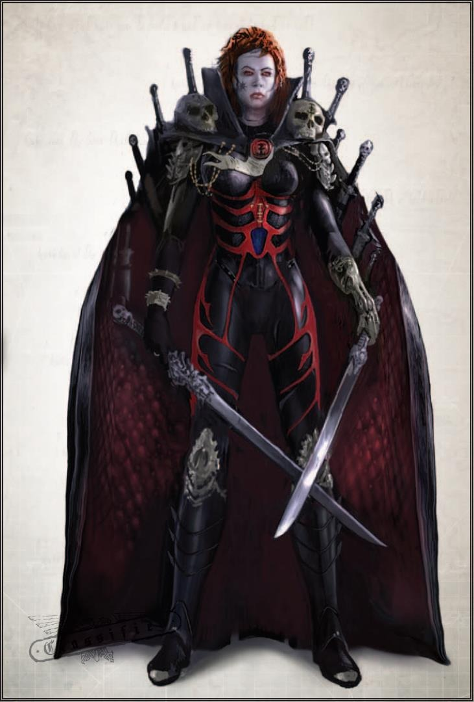
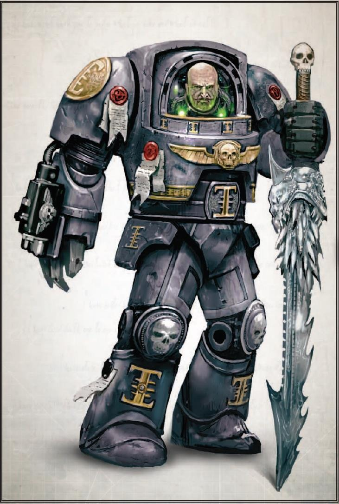
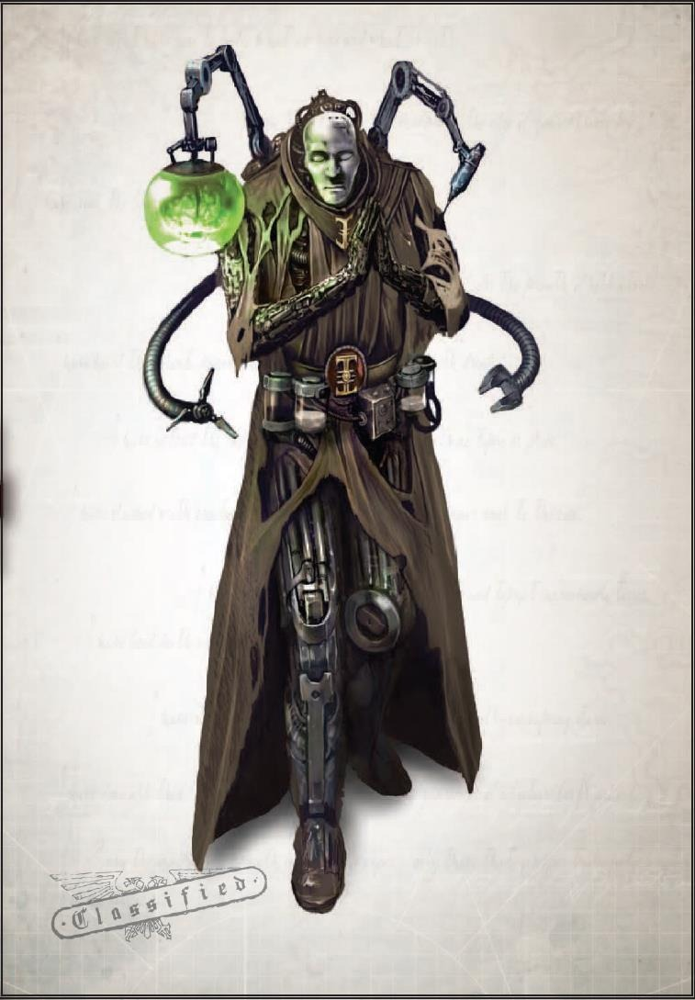

赛拉弗（炽天使 Seraph）
姓名：赛拉弗（授予的假名）
已知别名：无
已知合伙人或组织：咏死者（Moritat）拜死教、审判庭献祭派
偏好的行动方式：赛拉弗喜欢与目标直接对抗，经常在猎物感到最安全时从埋伏中发动攻击。赛拉弗是其女主人信任的得力助手，如果需要完成任务，她通常会得到其他专家的帮助和装
备。
这位名叫 "赛拉弗 "的刺客曾是激进审判官安东尼娅·梅斯莫隆的侍僧。赛拉弗对自己知之甚少，只知道她为审判官服务之前的一些蛛丝马迹。可以确定的是，在审判官参与普罗塔西亚的恶臭之灵阴谋期间，赛拉弗曾经是咏死者拜死教的成员，后来被一个邪恶的恶魔（三角宫欧冠参考：X-17-欧米茄，代号 "斯帕尔"）附身。作为侍僧和拜死教成员学到的双倍技能让赛拉弗给人带来双倍的恐惧，在审判官梅斯莫隆身边，她用特制的拉斯之刃（卡利西斯机械教根据地拉斯世界的珍贵特产）夺走了许多人的生命。被恶魔附身之后，赛拉弗在拉思金的森德尔巢都深处肆意屠杀，血腥的屠杀让帝国社会的每一个阶层都无法幸免。一整队暴风兵的牺牲和审判官梅斯莫隆的亲自干预才阻止了赛拉弗的破坏行径，梅斯莫隆为她的重要侍僧安排了一次全面的驱魔仪式。梅斯莫隆并没有轻率地采取这一行动，因为她打算利用这次驱魔来验证自己的献祭派观点，而在这一点上，她成
功了。驱魔之后，赛拉弗变得更加强大、冷酷，现在的她不过是女主人发号施令的工具而已。那些瞥见她脸上混沌烙印的人发现，这通常是他们最后看到的东西。最近，赛拉弗变得越来越渴望战斗，为女主人寻找更危险的敌人并与之作战。至于这种行为是得到了审判官梅斯莫隆的
认可，还是暗藏玄机，目前还不得而知。
100 / 105

101 / 105
审判官纳提乌斯·奥斯林(Natius Osrinn)
姓名：纳提乌斯·奥斯林
已知别名：老头查夫、雷霆之狼
已知合伙人或组织：锯齿问号、哈泽洛斯血鲨海盗团
偏好的行动方式：奥斯林是个狡猾的人，但也是个行动派。他不喜欢等待，一旦判断时机成
熟就立即行动。奥斯林非常依赖他的侍僧团队，很少单独行动，尽管他经常直接传送到行动
中心。
纳提乌斯·奥斯林曾经是审判官范·维根斯的学生，起初是一名受人信任、勤奋刻苦的侍僧。奥斯林因其敏锐的智慧和好斗的天性从所罗门的下层人渣中脱颖而出，在长达五十年的职业生涯中，他多次向审判官范·维根斯证明了自己的价值。最终，奥斯林晋升为审讯官，进而成为异形审判庭的正式审判官。然而，升职后不久，奥斯林的兴趣发生了转变，他的关注点逐渐转向巫术和奥术。随着时间的推移，他的效忠对象也从他的导师和他的修会转移开来，最
终，他以 "特殊情况 "为由失踪了。三角宫收到了几份报告，显示有人瞥见了神秘的审判官奥斯林，其中有几份报告称有人看到他曾协助遗物战团（Relictors）星际战士。其他报告显示，奥斯林在朦胧星域游荡了很久，一直旅行到到贝利亚四号星，然后在 803.M41 年他再次出现在卡利西斯星区。奥斯林的回归在三角宫引起了轩然大波，因为他穿戴着来历不明的古代终结者盔甲并随身携带着一把明显是恶魔武器的剑。奥斯林拒绝为自己的行为负责，他躲过了三角宫的召唤，独自闯入了光晕星群。有人说他身边聚集了一群不同寻常的侍僧：变种人、异形、非法灵能巫师，甚至还有一个拥有不可思议力量的恶魔宿主。至于他打算用这些各式各样的随从做什么，
目前还不得而知。
102 / 105

103 / 105
西瑞克·斯盖尔（Cyrrik Scayl）
姓名：西瑞克·斯盖尔
已知别名：塞文森大师
已知合伙人或组织：逻辑学者、诺曼·莱恩之子
偏好的行动方式：斯盖尔在远处执行任务，他将自己的指令委托给特殊的仿生强化信使或用
基因编码封印锁定的专用密码器。自从斯盖尔退出异端审判庭后，很少有人能见到他本人，但在整个星区的许多巢都世界都能找到他的特工。还有一些拉斯的技术神甫声称斯盖尔只是被误导了，他应该回到欧姆尼塞娅的庇佑下，而不是被打倒。
作为拉斯世界的技术神甫贤者，西瑞克·斯盖尔在两个多世纪前离开了自己的家乡拉斯哈德，加入了异端审判庭。在异端审判庭工作期间，斯盖尔痴迷于研究技术异端，认为它是卡利西斯星区的地方病。他以长篇大论而闻名，认为审判庭应该更深入地关注其管辖范围内发生的亵渎万机神的行为。当他拙劣的演说失败后，斯盖尔退出了审判庭，转而亲自追捕技术异端
分子。然而，一旦进入战场，斯盖尔就发现自己的观点发生了变化。与大异端诺曼·莱恩的相遇让斯盖尔顿悟，他不再追捕技术异端，而是加入了他们的行列，成为了一名狂热的皈依者。多年来，斯盖尔一直在追寻有关阿米库斯·托莱（Ammicus Tole）、格里兹瓦尔迪（Grizvaldi）和 诺曼·莱恩（Nomen Ryne）等技术异端的信息碎片，然后才开始形成自己的理论和研究。斯盖尔发誓要超越那些他曾经嘲笑和揶揄过的人，他致力于寻找一种将人类意识复制成具有自我意识的机魂的方法：令人生畏的技术异端流派 "硅基知灵"（Silica Animus，即憎恶智能）。到目前为止，斯盖尔的研究表明，只有灵能者的思想才具备承受这一过程所需的意志力，但他希望在实验后完善自己的理论，使任何大脑的思想都能得到改造。卡利西斯星区边境的几个世界都有斯盖尔的秘密实验室和解剖室，他的特工们在他的遥控指挥下在这些地区工作。最近，斯盖尔与逻辑学者邪教取得了联系，他在异端审判庭的前同事们担心这两个异端势力之间的联盟可能会带来灾难性的后果。然而，迄今为止，所有被派去
寻找叛变贤者下落的特工都没有回来。
104 / 105

105 / 105